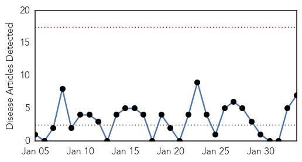
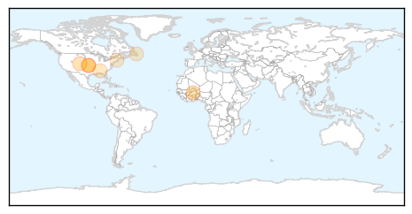
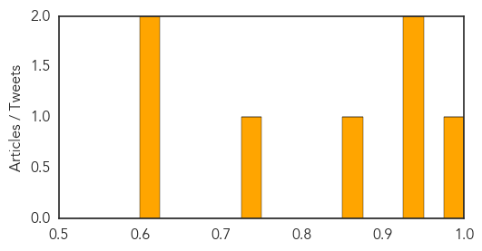

Mumps
30-Day Web Trend
0 alerts, 0 warnings

30-Day Twitter Trend
0 alerts, 0 warnings

Article Locations

Article Confidences

Top Articles:
-
No articles found for Feb 03, 2015
Top Tweets:
-
No tweets found for Feb 03, 2015
Meningitis
30-Day Web Trend
0 alerts, 0 warnings

30-Day Twitter Trend
0 alerts, 0 warnings

Article Locations
Article Confidences
Top Articles:
- 0.988
- Second UO student diagnosed with meningococcemia
- 0.945
- Meningitis kills one person in Bongo District
- 0.942
- Meningitis unpredictable and hard to trace, says expert
- 0.868
- ‘Medical mystery’ still stumps doctors amid outbreak
- 0.728
- Seniors need 2 pneumonia vaccines, CDC advisory panel says
- 0.619
- FDA approves Bexsero for use in 10- to 25-year-olds
- 0.613
- Health officials say college student has meningitis
Top Tweets:
-
No tweets found for Feb 03, 2015